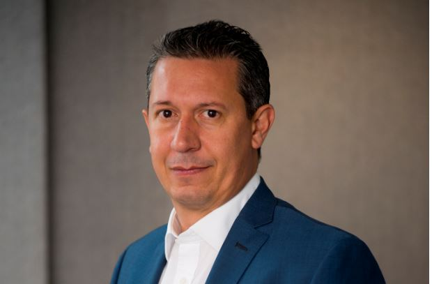

Cuanto más complejo el escenario, más necesario se hace gestionar activamente las inversiones, estar informado minuto a minuto y cuidarse bien las espaldas para evitar que golpes como el del "lunes negro" post PASO terminen en jaque mate. Para los inversores de alto patrimonio, los bancos y sociedades de bolsa tienen reservado un servicio exclusivo que se conoce como Wealth Management, con asesoramiento integral que excede el mundo estrictamente de las inversiones.
¿Qué abarca? Desde la planificación financiera personalizada de corto, mediano y largo plazo por objetivos y perfil de riesgo hasta la gestión activa del portafolio de inversión con activos locales y extranjeros. Y, en algunos casos, también asesoramiento en otros temas vinculados al patrimonio como impuestos o herencias, por ejemplo.
En la Argentina no es un servicio con el que cuenten todos los actores del sistema, pero poco a poco va tomando vuelo, apalancado especialmente en la necesidad de los inversores de protegerse con activos por fuera del mercado local. El blanqueo de capitales primero (se exteriorizaron US$ 110.000 millones en 2016) y la aparición de la figura de "asesor global" después le dieron el plafón necesario para que el negocio se desarrolle. La incertidumbre y la inestabilidad de este año electoral también abonan la necesidad de ciertos inversores de contar con un asesoramiento más taylor made.

En Banco Mariva relanzaron recientemente este segmento bajo el nombre de FIRST Mariva.
“Nuestra mayor ventaja es que somos el único grupo financiero argentino que, gracias a nuestra presencia internacional, brinda acceso al mercado de capitales global. De esta manera, les ofrecemos a nuestros clientes acceso on shore / off shore para realizar inversiones a costos muy competitivos para este segmento”, explica Pablo Santiago, gerente de Wealth Management de Grupo Mariva.
“Contamos con un broker dealer en USA, regulado por la SEC y por Finra, que custodia los activos en Pershing subsidiaria del Bank of New York Mellon, que nos permite ofrecer a los clientes plataformas de operaciones y consulta de posiciones a través de una app”, describe el ejecutivo y subraya que, además, ofrecen a sus clientes un esquema especial de comisiones, vínculos con Asset Managers del exterior, una web exclusiva e invitaciones a eventos”.
En Mariva, el servicio de Wealth Management está disponible para todos los clientes y, según cuenta Santiago, “la posibilidad concreta de diversificar carteras a partir del acceso a mercados internacionales desde acá, es una de los atributos que más valoran nuestros clientes".
“Desde hace varios meses venimos recomendando a nuestros clientes diversificarse regionalmente, por lo cual antes de las PASO nuestra cartera modelo para un perfil balanceado solo tenía un 20% en activos Argentina, principalmente en bonos corporativos con perfil defensivo, como Tecpetrol 2022. Esta compañía tiene el respaldo de Grupo Techint, es el único bono emitido por el grupo y un medio para capitalizar el potencial de crecimiento de Vaca Muerta”, detalla Santiago de Mariva acerca de la estrategia sugerida. El resto del portfolio recomiendo alocarlo en el exterior.
Para la porción de fondos que recomiendan invertir en el exterior, la cartera sugerida por Mariva a sus clientes de Wealth Management es bien diversificada: “A nivel internacional, distribuimos el resto de la cartera con un 45% en bonos corporativos de EEUU y también asignamos 30 por ciento en bonos soberanos y corporativos de América Latina, que serían favorecidos por las menores tasas de interés de la Fed que habilitan a los bancos centrales de la región a seguir su camino. Finalmente, incluimos 5 por ciento de acciones de sectores defensivos de EEUU, ya que mostraron ganancias corporativas mejores a lo esperado en el segundo trimestre de 2019, aún tienen valuaciones razonables y serían sostenidas por planes de recompra corporativos”.
Dirigido a su base de clientes individuos, pero también con la intención de consolidarse como plataforma integrada para que Agentes Productores y Asesores de Inversión vuelquen sus negocios. Nuestra mayor ventaja es que somos el único Grupo financiero argentino que gracias a nuestra presencia internacional, brinda acceso al mercado de capitales global. De esta manera, les ofrecemos a nuestros clientes (individuos y productores/asesores) acceso on shore-off shore para realizar inversiones a costos muy competitivos para este segmento.
Contamos con un bróker dealer en USA, regulado por la SEC y por FINRA, que custodia los activos en Pershing (perteneciente al grupo Bank of New York Mellon) que nos permite ofrecer a los clientes plataformas de operaciones y consulta de posiciones a través de una app.
Además de una amplísima gama de productos de distinto grado de sofisticación, brindamos nuestro experimentado conocimiento en el mercado local y nuestro servicio First Mariva Research, exclusivamente dedicado a generar ideas de inversión para este tipo de clientes.
Nuestro impulso en el segmento de Wealth Management está dado por la creciente demanda por este servicio en el mercado local. Estamos convencidos que estar cerca de los clientes, brindado una plataforma internacional, nos va a permitir crecer rápidamente. Lo más significativo es que esa demanda se encuentra sub-atendida (y en algunos casos, mal atendida) por los jugadores tradicionales y eso nos entusiasma porque sabemos cómo agregar valor. La posibilidad concreta de diversificar carteras a partir del acceso a mercados internacionales desde acá, es una de los atributos que más valoran nuestros clientes.
En ese contexto es que la figura de Asesor Global de Inversión (AGI), que la Comisión Nacional de Valores (CNV) creó en septiembre de 2017, se vuelve una pieza clave para la gestión de patrimonio. El asesor global está autorizado a operar tanto con inversores locales como extranjeros, en el mercado local o en las bolsas del exterior. Asimismo, es esa resolución la que habilita a los agentes locales de Compensación y Liquidación (ALyC), es decir, los brokers o agentes de bolsa, a sellar acuerdos con sus pares del exterior y así poder cursar desde acá órdenes de compra/venta en mercados internacionales, algo que antes estaba vedado.
Fuente: Revista Apertura / La City - EDICIÓN ESPECIAL 2019.